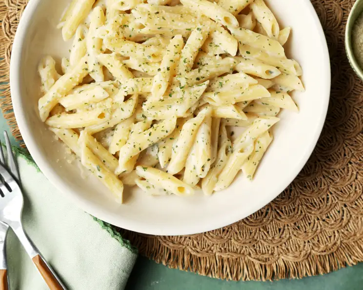

Creamy Garlic Penne Pasta

Want to go home? Just go there: Home
Ingredients:
- 1 (1 lb) box penne or 1 (1 lb) box penne rigate, cooked as directed, drained and kept hot
- 2 tablespoons butter or 2 tablespoons margarine
- 2 garlic cloves, minced
- 2 tablespoons flour
- 3/4 cup chicken broth or 3/4 cup beef broth
- 3/4 cup milk
- 2 teaspoons parlsey flakes
- salt and pepper, to taste
- 1/3 grated parmesan cheese
Instuctions:
- Melt butter and add garlic in a medium sauce pan.
- Cook over mediun heat for 1 minute.
- Add flour and cook 1 minute, stirring constantly.
- Stir in broth and milk and cook, stiring frequestly, until sauce boils and thickens.
- Add parsley, salt, pepper and cheese.
- stir until cheese is melted.
- Toss hot pasta with sauce and server immediately.